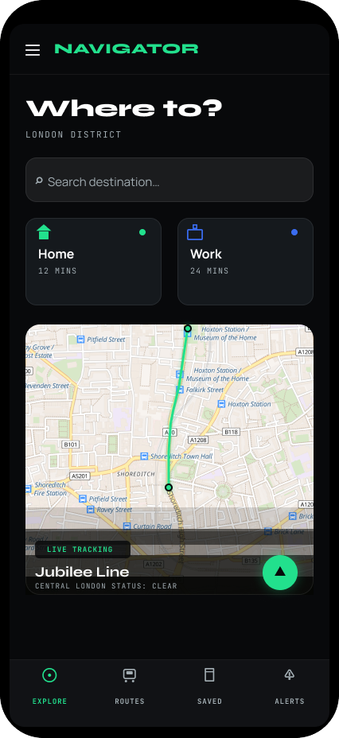
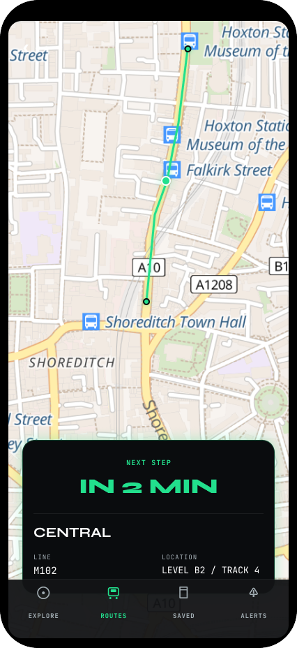
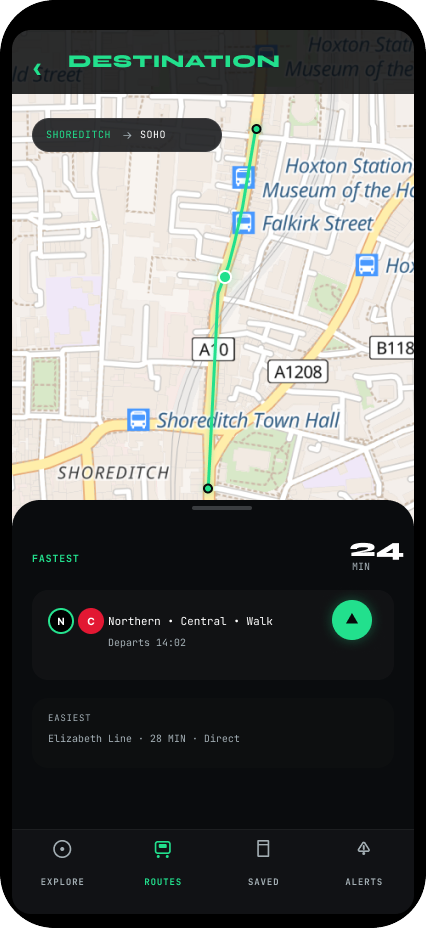
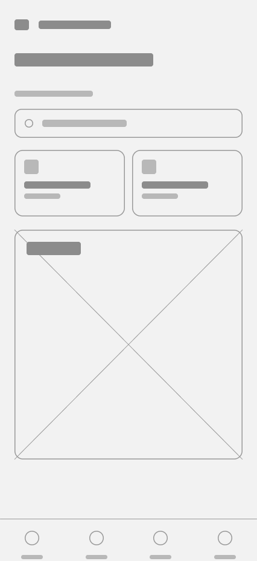
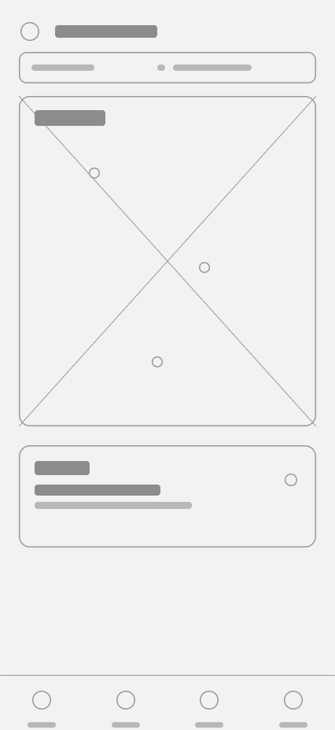
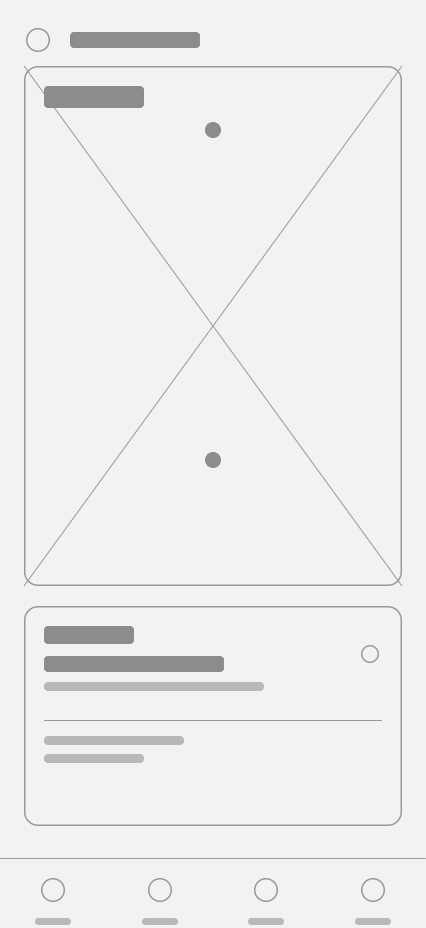
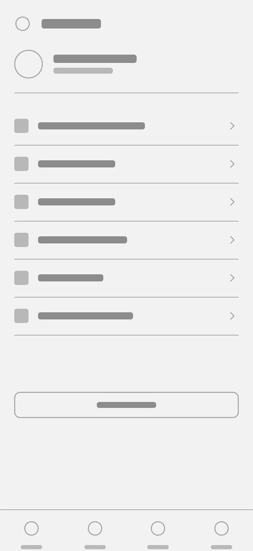
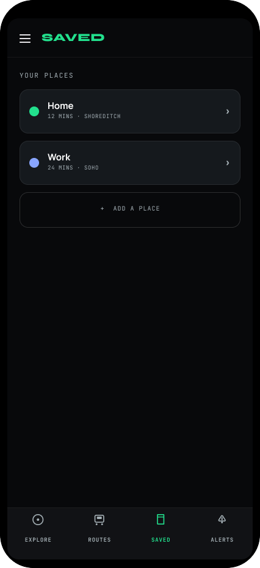

The app that built my city instincts — and where it started to slow me down.
Citymapper is the transit app I open more than any other — it stitches together tube, bus, bike, walk and rail into a single decision. After years of daily use, I kept noticing the same friction: a home screen crowded with features I never touch, navigation patterns that change between screens, and a typographic hierarchy that makes the important moment — "which train, which platform, how long" — work harder than it should.
So I scoped a self-initiated overhaul: keep the intelligence Citymapper is loved for, but rebuild the surface around it. Clearer first screen, one consistent navigation model, and a type system tuned for glanceability on the move.
Four issues quietly tax every journey.
The first screen tries to do everything at once — saved places, nearby departures, bikes, weather, disruptions, promos. The single most common task, "plan a route," competes with a dozen modules for attention.
Cards, lists and sheets each behave slightly differently. Some actions live in a top bar, others in a floating button, others in a bottom sheet — so muscle memory never fully forms across the app.
Key destinations are buried two or three taps deep, while secondary features sit at the top level. There's no stable mental model for "where am I" or "how do I get back" mid-journey.
Too many sizes doing too little. Departure times, line names and walking distances share similar weights, so the eye can't lock onto the one number that matters when you're glancing at a moving train.
I talked to commuters, then watched them tap.
6 interviews with daily transit users across London, plus 3 moderated usability sessions on the current app and an unmoderated 20-person task test in Maze. I paired that with a teardown of three competitors to map where Citymapper leads and where it lags.
of users said the home screen feels "busier than it needs to be"
avg. time to find the next departure on a busy route screen
avg. taps to reach a saved place — expected to be one
interviewees use a second app to double-check live times
| Dimension | Google Maps | TfL Go | Moovit |
|---|---|---|---|
| Multi-modal routing | Strong | Rail-only | Strong |
| Live disruption clarity | Buried | Excellent | Noisy |
| Home-screen focus | Search-led | Minimal | Cluttered |
| Typographic hierarchy | Clear | Clear | Flat |
People open the app with a destination already in mind. Everything before the route is friction.
→ Home Redesign leads with a single search field. Nothing else competes above the fold.
Trust is built in the live journey. If departure times feel uncertain, users reach for a second app.
→ Journey Tracker pairs every live time with a source and freshness stamp, so certainty is visible, not assumed.
Glanceability beats density. One bold number outperforms five competing labels at a bus stop.
→ The type scale gives the departure number its own weight class — nothing on the route card competes with it.
Two riders I designed every decision around.
Maya Okonkwo
28 · Commuter · Hackney → Canary Wharf"I have eleven minutes to make the change at Bank. I don't want to think — just tell me the platform."
- Leave home and trust the first route shown
- Catch interchanges without missing a beat
- Get re-routed instantly when a line is down
- Too much to scan before she can act
- Live times she's not sure she can trust
- Saved places hidden behind extra taps
Tomás Rivera
41 · Occasional visitor · New to London"I don't know the lines or the zones. I just need to know I'm walking the right way out of the station."
- Understand a route without local knowledge
- Clear step-by-step guidance on the ground
- Know the cost before he commits
- Jargon and abbreviations he doesn't know
- Unsure which exit or platform to take
- Anxious about getting on the wrong train
From a deep, branching tree to four honest tabs.
An open card sort with 10 participants revealed that users group the app into four jobs, not the eight sections it ships with. I collapsed the navigation into a stable bottom bar — Go, Saved, Nearby, Account — and pushed everything else into context, where it's needed.
top-level destinations
taps to a saved place (design target — not yet usability-tested)
consistent navigation model
Structure first, in greyscale.




The redesign, fully dressed.
Home Redesign
Search and saved places lead. One map, one input, zero clutter.
Search Flow
Ranked options with the trade-off — time, cost, ease — legible at a glance.
Journey Tracker
One instruction at a time. The next action is always the biggest thing on screen.

Bottom Nav System
Four fixed tabs, persistent across the app. The same model, everywhere.
See the difference.
A single search field and two saved places lead. Everything secondary moved into context.
The map leads and a single floating card surfaces only the next action, large and certain.
A small kit, ruthlessly applied.
Text-on-canvas contrast is 17.1:1 — well past WCAG AAA (7:1) — a floor set before any screen was drawn, not a pass applied after.
What two weeks with Citymapper taught me.
Restraint is the feature. Every module I removed from the home screen made the one that stayed more confident. Editing down was harder — and more valuable — than adding.
I'd test the live-journey card on the move, not at a desk. Glanceability claims only hold up when someone is actually walking to a platform with a bag in one hand.
Prototype the disruption-to-reroute flow end to end, run a formal WCAG AA audit against every screen — not just the palette — and validate dynamic-type scaling with actual screen-reader users, then re-test against the original.
Good transit design disappears. If this is how you want your product to think, let's talk.